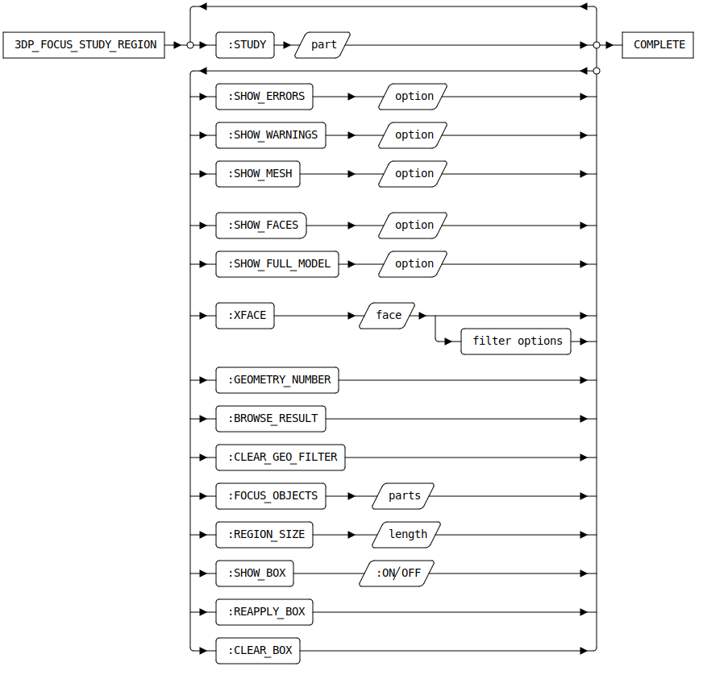

3DP_FOCUS_STUDY_REGION [Public Dialog]
Package: 3d-printing (Nick name(s): :3dp)
Focus on a region of a mesh quality study by showing only items in a specified region of interest (box) or with similar geometry.
The dialog offers two complementary approaches for filtering down the measurement to a manageable size:
- Bounding box based based filter. See options 2-9.
- Filter similar face geometry. See options 10-13.
While the dialog is active, both approaches can be used in an alternating way to interactively switch between box or geometric filtering.
It might be handy to also load the original CAD model for reference, but it is not required. The study contains a copy of all relevant faces from the CAD model.
Dialog Options
- Show this help page.
- A mesh study container generated by the dialog
3DP_MEASURE_MESH_QUALITY(Measure the quality of a mesh with respect to the part it was derived from). See command line option:STUDYbelow.
- Show Mesh Options
-
Selectively show/hide mesh regions from the study. Available choices are:
- Solid: The faces of mesh regions are opaque
- Transparent: The mesh regions are semi-transparent
- Hidden: The mesh regions are hidden. Following kinds of mesh regions can be controlled with these options:
- Error regions. Mesh regions exceeding the error tolerance.
- Warning regions. Mesh regions exceeding the warning tolerance.
- The entire imported mesh body (full mesh).
- Show Model Options
-
Selectively show/hide CAD model regions from the study. Available choices are:
- Solid: Faces of the CAD model opaque
- Transparent: Faces of the CAD model are semi-transparent
- Hidden: Faces of the CAD model are hidden. Following kinds of CAD model regions can be controlled with these options:
- Model Faces. CAD model faces which could not be assigned to mesh faces or the measurment found errors/warnings for associates mesh regions.
- The CAD model uses as a reference for the mesh evaluation. This option is available only if the CAD model is available in session. The CAD model is not required to be in session as copies of relevant faces are part of the study. However, it might be handy for better context visualization.
- Search by Geometry Options
- Use geometric rules to focus on faces with similar geometry. 8. A reference model face to be used as a template for finding faces with similar geometries. Once a face has been selected additional geometry specific matching options appear.
- Search Result Options
-
- Show the number of matching geometries.
See command line option
:GEOMETRY_NUMBERbelow. - Open the Measurement Browser (see section Measurement Browser for details).
- Reapply the geometry filter. See command line option
:REAPPLY_RULEbelow
- Show the number of matching geometries.
See command line option
- Focus Measurement (By Box)
- Use part or assembly boxes to focus on a region of interest.
12. One or more parts or assemblies from the study the mesh
quality study container associated with a mesh.
The bounding box of the selected parts / assemblies define the region of interest
to focus on. You can use the structure browser for selection, pick, or use the
measurement browser (recommended). See the Measurement Browser section
for more details. All parts from the mesh quality analysis which fully lie in the region of interest
are drawn, all other parts are hidden. See option
:FOCUS_OBJECTSbelow. Parts not contained in the region of interest are hidded (see illustration item 14 for an example). 13. The inflation amount for the region of interest. The amount is calculated by increasing the bounding box up to the size of the entire measurement result. This is used to add more context to the focus region. See command line option:REGION_SIZEbelow. 14. Show/hide the region-of-interest (box feedback). 15. Reapply the region-of-interest (box) filter. 16. Clear region-of-interest filter.
The Measurement Browser

The measurements browser is activated by pressing the Browse button_ (see previous section). It shows measurement errors and warnings associated with model faces or unidentified geometries. Geometry filters described previous section, can be used to reduce the number of measurments shown in this dialog.
List of measurements associated with model faces. A measurement contains a CAD model face, contiguous regions of facets exceeding the warning or error tolerance. If an association between facets and CAD model faces could not be established, these faces or facets are listed as Unassigned Facets or Unassigned Faces.
The Errors and Warnigs columns show the accumulated area of the facet regions related to a model face. Facet regions with tiny areas are most likely insignificant and can be detected quickly.
The Max Dist column shows the maximum distance of a mesh group to the associated model face. For unassigned facets or faces that distance is 0 (unknown)
Left Click on a table column header changes the sort order of that column. Right click on a table column header opens the Column Filter dialog. The Column Filter dialog can be used to reduce table content based on user defined filter criteria.
Selecting a measurement automatically defines a region-of-interest (box) filter.
List of face or facet regions in the measurement selected in (2). Left Click on a table column header changes the sort order of that column. Right click on a table column header opens the Column Filter dialog. The Column Filter dialog can be used to reduce table content based on user defined filter criteria.
On selection the region of interest (box) filter is set to the chosen face or facet group.
The Area column shows the accumulated area of a face or facet region. Elments with tiny areas are most likely insignificant and can be detected quickly.
The Max Dist column shows the maximum distance of a face or facet group to the associated model face. For unassigned facets or faces that distance is 0 (unknown).
Syntax

Command Line Options
:STUDY{container}- A study container generated by
3DP_MEASURE_MESH_QUALITY(Measure the quality of a mesh with respect to the part it was derived from).
Show Mesh Panel
:SHOW_ERRORS{keyword}-
Show mesh regions whose maximum distance to the CAD model face exceed the error tolerance of the study in one of the following modes:
:solid- show regions opaque:transparent- show regions semi-transparent.- `:hidden' - regions are hidden
:SHOW_WARNINGS{keyword}-
Show mesh regions whose maximum distance to the CAD model face exceed the warning tolerance of the study in one of the following modes:
:solid- show regions opaque:transparent- show regions semi-transparent.- `:hidden' - regions are hidden
:SHOW_MESH{keyword}-
Show the entire mesh which the study is based upon in one of the following modes:
:solid- show mesh opaque:transparent- show mesh semi-transparent.- `:hidden' - hide mesh
Show Model Panel
:SHOW_FACES{keyword}-
Show model faces of the CAD model in one of the following modes:
:solid- show regions opaque:transparent- show regions semi-transparent.- `:hidden' - regions are hidden
:SHOW_FULL_MODEL{keyword}-
Show the entire CAD model which the study is based upon in one of the following modes:
:solid- show mesh opaque:transparent- show mesh semi-transparent.- `:hidden' - hide mesh
This opton is only available if the CAD model is loaded into session. The CAD model is not part of the study and must be loaded explicitely.
Search By Geometry Panel
:XFACE{face}- A reference model face to be used as a template for finding faces with similar geometries. Upon selection populates the dialog with additional, geometry specific matching options.
Search Result Panel
:GEOMETRY_NUMBER- Shows the number of matching geometries. This field is read-only.
:BROWSE_RESULT
: Open the Measurement Browser
:CLEAR_GEO_FILTER- Action to clear the geometry rule filter showing all measurements in the measurement browser.
Focus Measurement (By Box) Panel
:FOCUS_OBJECTS{part(assembly) list}- One or more parts or assemblies whose bounding boxes define the region of interest to focus on. All selected parts or assemblies must be members of the same study.
:REGION_SIZE{number}- Amount of additional inflation of the region of interest up to the size of the entire measurement. Used to add more context.
:SHOW_BOX {:ON | :OFF}
: Show or hide the feedback box of the region-of-interest.
:REAPPLY_BOX- reapply the box filter with selected parts/assemblies.
CLEAR_BOX-
Remove the region-of-interest filter.